Introduction
Ce rapport accompagne le relevé d'audit effectué sur le site « Uni.lu ».
La méthodologie d'audit employée repose sur le référentiel RGAA 4.1, consultable à l'adresse suivante : https://accessibilite.public.lu/fr/rgaa4.1/criteres.html
L'audit a été réalisé au moyen de l'utilisation de navigateurs web et d'outils spécialisés. Des tests de restitution ont également été effectués conformément à la base de référence définie par le RGAA 4.1.
Échantillon
L'audit a porté sur un échantillon de 16 pages pour le niveau double A (AA) :
Environnement de test (base de référence)
Quelques critères RGAA, notamment ceux de la thématique JavaScript, incluent des tests de restitution à effectuer sur des technologies d'assistance associées à des navigateurs et des systèmes d'exploitation. Pour qu'un dispositif HTML / WAI-ARIA ou son alternative soit considéré comme compatible avec l'accessibilité, il faut qu'il soit pleinement fonctionnel, en termes de restitution et de fonctionnalités sur certaines combinaisons. Vous trouverez une explication détaillée de cet environnement de tests dans le document du RGAA 4.1.
Nous détaillons ci-dessous la base de référence utilisée pour réaliser les tests de restitution des composants du site.
Environnement de test – ordinateur
| Technologie d'assistance | Navigateur |
|---|---|
| NVDA 2022.2.4 | Firefox 106 |
| JAWS 2022 | Firefox 106 |
| VoiceOver (macOS Monterey version 12.6) | Safari 16 |
Environnement de test — mobile
| Système d'exploitation | Technologie d'assistance | Navigateur |
|---|---|---|
| Android 12 | TalkBack (dernière version) | Chrome 107 |
Accessibilité des pages auditées
Le site présente un niveau général d'accessibilité faible.
Le niveau de conformité relevé atteint 34,29 % de conformité sur l'ensemble des pages auditées, avec 37,04 % de conformité au niveau simple A (A) et 25,00 % de conformité au niveau double A (AA).
Le site est non conforme.
Conformité RGAA 4.1 du site
| Conforme | Non conforme | |
|---|---|---|
| A | 37,04 % | 62,96 % |
| AA (légal) | 34,29 % | 65,71 % |
Note sur le calcul de conformité
La conformité globale (Tableau « Conformité RGAA 4.1 ») est calculée de la manière suivante : C / (C+NC). C'est le nombre de critères conformes et NC le nombre de critères non conformes.
C'est ce nombre qui constitue la référence légale. Il représente le taux de conformité de l'échantillon.
Il est normal que le taux de conformité global diffère sensiblement du taux de conformité par page. En effet, un critère NC (non conforme) sur une page rend le critère non conforme sur l'ensemble de l'échantillon.
Pour qu'un site soit conforme (100 % des critères applicables sont conformes au niveau AA), il est nécessaire que le taux de conformité par page équivaille à 100 %.
Conformité pour chaque niveau
| Conforme | Non conforme | |
|---|---|---|
| A | 37,04 % | 62,96 % |
| AA | 25,00 % | 75,00 % |
Moyenne par pages
| Nº page | Titre de la page | %C |
|---|---|---|
| P01 | Accueil | 32,56 % |
| P02 | Contact | 51,72 % |
| P03 | Mentions légales | 84,00 % |
| P04 | Événements | 57,14 % |
| P05 | Demandes d’admission/candidature | 70,37 % |
| P06 | Résultats de recherche (mot: diplôme) | 60,00 % |
| P07 | Témoignages | 69,57 % |
| P08 | Institute for advanced studies | 66,67 % |
| P09 | Priorités de recherche | 62,07 % |
| P10 | Recherche | 58,62 % |
| P11 | Bachelors | 61,54 % |
| P12 | Bachelor en Sciences de la Vie - Biologie | 73,08 % |
| P13 | Brochures études | 73,08 % |
| P14 | Umatter | 64,29 % |
| P15 | Inscription à la newsletter | 70,59 % |
| P16 | Facts | 64,29 % |
Moyenne par thématiques
| Thématiques | C | NC |
|---|---|---|
| Images | 20,00 % | 80,00 % |
| Cadres | 100 % | 0 % |
| Couleurs | 0 % | 100 % |
| Multimédia | 50,00 % | 50,00 % |
| Tableaux | 50,00 % | 50,00 % |
| Liens | 0 % | 100 % |
| Script | 33,33 % | 66,67 % |
| Éléments obligatoires | 37,50 % | 62,50 % |
| Structuration | 0 % | 100 % |
| Présentation | 30,77 % | 69,23 % |
| Formulaires | 25,00 % | 75,00 % |
| Navigation | 50,00 % | 50,00 % |
| Consultation | 40,00 % | 60,00 % |
Impacts utilisateurs
Les principales personnes impactées sont les personnes aveugles et celles qui naviguent au clavier. Les problèmes liés aux scripts, à l'API ARIA, aux formulaires et à la structuration du site avec l'affichage en tableau qui est lourd en restitution pour les technologies d'assistance, rendent parfois difficile l'utilisation du site par ces utilisateurs.
Droit à la compensation
Les dérogations émises notamment pour charge disproportionnée demandent en contrepartie la mise en place d'un moyen de compensation pour les utilisateurs. Pour les documents bureautiques par exemple, vous devez fournir un moyen à l'utilisateur de demander une version accessible d'un document s'il en a besoin. Cela peut être un mail ou un formulaire de contact.
Note sur le relevé des non-conformités
Ne sont cités dans ce rapport que quelques exemples issus du relevé des non-conformités.
De plus, toutes les occurrences d'une non-conformité ne sont pas listées dans le relevé. Par exemple : les soucis de contraste de texte, le relevé mentionne quelques occurrences, mais ne les cite pas tous.
Avis
Le site ayant été développé en HTML4, les techniques d'intégration et de structuration des contenus utilisés ne sont plus totalement d'actualité et pertinentes. En conséquence, le site est peu accessible, la navigation est complexe et peut poser de gros soucis aux personnes utilisant les technologies d'assistance.
Les non-conformités les plus bloquantes pour les utilisateurs concernent :
- La structure des pages et du contenu, notamment la structuration en tableaux ;
- Les scripts ;
- Les formulaires.
Ce sont donc ces points qui devront nécessiter une attention toute particulière et qui demanderont le plus d'efforts.
Annexe technique
Images
Recommandation
Donner à chaque image porteuse d'information une alternative textuelle pertinente et une description détaillée si nécessaire. Lier les légendes à leurs images. Remplacer les images textes par du texte stylé lorsque c'est possible.
Images de décoration
Le site contient des images de décoration qui ne sont pas correctement identifiées, soit parce qu'elles ont une alternative renseignée, soit parce qu'il manque les attributs nécessaires pour qu'elles soient ignorées par les technologies d'assistance.
Ces images n'apportent aucune information et peuvent causer des problèmes de compréhension pour les aveugles et les grands malvoyants qui vont écouter les contenus avec un lecteur d'écran.
- Dans le cas d'une image insérée avec la balise
img, mettre unalt="". - Dans le cas d'une image insérée avec la balise
svg, mettre une propriété ARIAaria-hidden="true".
Constats sur le site
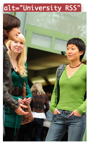Sur la page de résultats de recherche, on trouve en colonne latérale, une image de décoration qui n'apporte aucune information et qui possède un attribut alt qui n'est pas pertinent alt="University RSS"
Images porteuses d'information
Il est nécessaire de donner une alternative pertinente dans le cas où la suppression de l'image entraînerait un problème de compréhension des contenus.
Constats sur le site
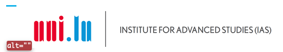Sur la page "Institute for Advanced Studies (IAS)", l'image contenant le même texte incrusté n'a pas d'alternative définie. Ce qui constitue une perte d'information pour les personnes qui utilisent les technologies d'assistance.
Images porteuses d'information complexe
Certaines images porteuses d'informations sont complexes et nécessitent une description détaillée, pertinente, structurée et adjacente à l'image afin de permettre aux personnes ne percevant pas les images (comme les personnes aveugles), ou ayant des difficultés à les comprendre lorsqu'elles contiennent du texte (personnes ayant des difficultés de lecture, comme les dyslexiques par exemple) d'accéder à l'information.
Il sera possible de masquer cette description et de prévoir un bouton permettant à l'utilisateur de l'afficher si besoin (par exemple : « Afficher la description de l'image »). Voir un exemple de ce mécanisme. Il est également possible de proposer un lien adjacent à l'image vers la description détaillée.
Constats sur le site
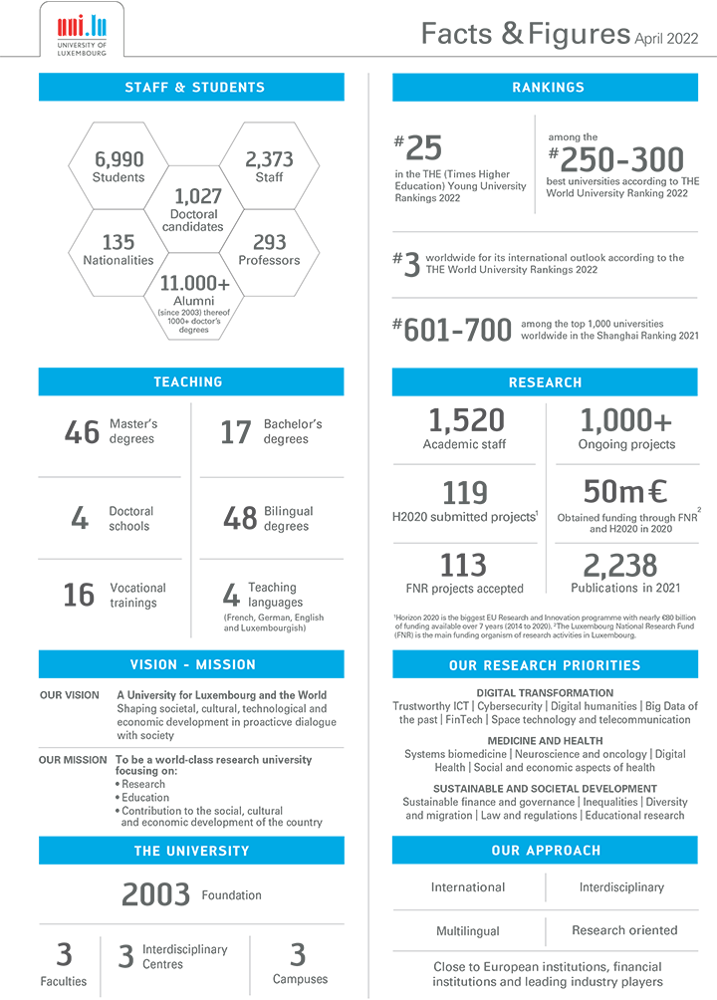Sur la page "Facts", on trouve une image complexe qui nécessite une description détaillée pour retranscrire l'intégralité de son contenu.
Images textes
Lorsque des images textes peuvent être reproduites en HTML et CSS, vous ne devez pas utiliser d'images.
Les textes doivent être réalisés en HTML et CSS afin de permettre aux utilisateurs qui en ont besoin d'adapter leur lisibilité (agrandissement des caractères, modification des couleurs, des polices…).
Il est également possible de conserver les images textes et de fournir à l'utilisateur un mécanisme de remplacement qui lui permet, avec un bouton par exemple, de remplacer toutes les images textes en textes stylés.
Constats sur le site
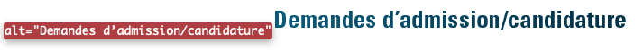Sur la page "Demandes d’admission/candidature", on trouve une image contenant du texte incrusté qui peut être reproduit à l'aide de HTML et CSS.
Couleurs
Recommandation
Ne pas donner l'information uniquement par la couleur et utiliser des contrastes de couleurs suffisamment élevés pour les textes et les composants d'interface.
Contrastes des textes
Plusieurs couleurs présentent un rapport de contraste insuffisant, ce qui peut poser problème aux personnes déficientes visuelles qui ont des difficultés à percevoir les couleurs ou les contrastes.
Rapports de contrastes définis par le RGAA
- Pour les textes qui ont une taille de police calculée inférieure à 24px sans effet de graisse ou une taille de police calculée inférieure à 18,5px avec effet de graisse, le rapport de contraste entre la couleur du texte (y compris le texte en image) et son arrière-plan doit être de 4.5:1, au moins.
- Pour les textes qui ont une taille de police calculée supérieure ou égale à 24px sans effet de graisse ou une taille de police calculée supérieure ou égale à 18,5px avec effet de graisse, le rapport de contraste entre la couleur du texte (y compris le texte en image) et son arrière-plan doit être de 3:1, au moins.
Vous pouvez foncer les couleurs pour obtenir le rapport de contraste exigé.
Si la charte graphique ne peut être modifiée, fournissez une méthode aux utilisateurs pour consulter le site avec des contrastes suffisants. Ceci peut être réalisé simplement avec une fonctionnalité JavaScript et une surcharge CSS des couleurs.
Vous pouvez voir un exemple de ce type de mécanisme sur le site sncf.com. Dans les réglages d'accessibilité, vous trouverez une option qui permet d'afficher le site avec des contrastes renforcés et inversés.
Constats sur le site
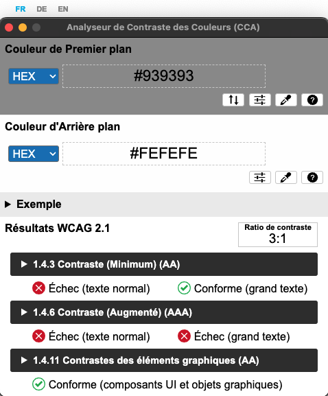À travers le site, de nombreux liens comme "Plus d'Événenments" et "Plus de À la une" sur la page d'accueil, de couleur bleue (#00B8EF) sur fond blanc (#FFFFFF) ont un ratio de 2,
Contraste des composants d'interface
Les composants d'interface, les illustrations porteuses d'information ou encore les mises en couleurs porteuses d'information doivent être suffisamment contrastés pour être perçus par les utilisateurs ayant des troubles de perception des couleurs. Par exemple, une icône porteuse d'information devra avoir un rapport de contraste avec la couleur de fond de 3. De même, pour un champ de saisie de formulaire, dont la zone active est matérialisée par sa bordure, alors la couleur de cette bordure devra avoir un rapport de contraste de 3 avec la couleur de fond de la page.
Constats sur le site
-
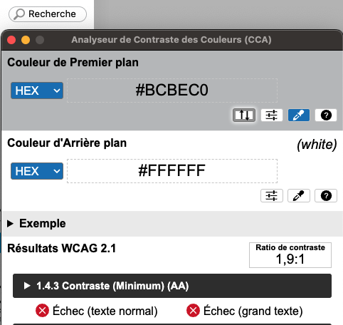
Dans l'en-tête du site, le champ de saisie "Rechercher" présent à côté du menu de navigation principal, a une bordure grise (#BCBEC0) sur un fond blanc (#FFFFFF) soit un ratio de 1,9:1 au lieu de 3.
-

Sur la page "Événements", les boutons de sélection des mois précédents et suivants dans le sélecteur de date (Datepicker), ont des flèches de couleur blanche (#FFFFFF) sur un fond bleu (#72A7CF) soit un ratio de 2,6:1 au lieu de 3.
Information par la couleur
Lorsqu'une information est donnée par la couleur, il faut qu'elle soit également véhiculée par une autre méthode, par exemple par un texte qui donne la même information, pour être perçue par les utilisateurs aveugles.
Il faut également donner un indice visuel autre que la couleur, afin de répondre aux besoins des personnes déficientes visuelles (les daltoniens par exemple). Il peut s'agir d'un symbole, d'une texture, de chiffres.
Constats sur le site
-
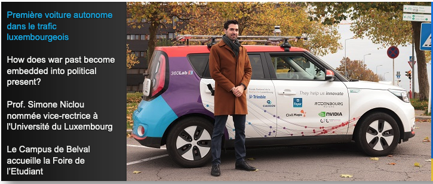
Sur la page d'accueil du site, dans le carrousel présent en haut de page, l'indication de l'élément actif n'est donnée que par la couleur du texte adjacent à l'image. Ce qui constitue une perte d'information pour des personnes déficientes visuelles.
-
Dans l'en-tête du site, dans la liste de liens vers les différentes langues du site, l'indication de la langue courante n'est donnée que par la couleur. Ce qui constitue une perte d'information pour les personnes aveugles notamment.
-
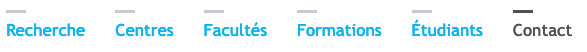
Dans l'en-tête du site, dans la liste de liens vers les différentes langues du site, l'indication de la langue courante n'est donnée que par la couleur. Ce qui constitue une perte d'information pour les personnes aveugles notamment.
-
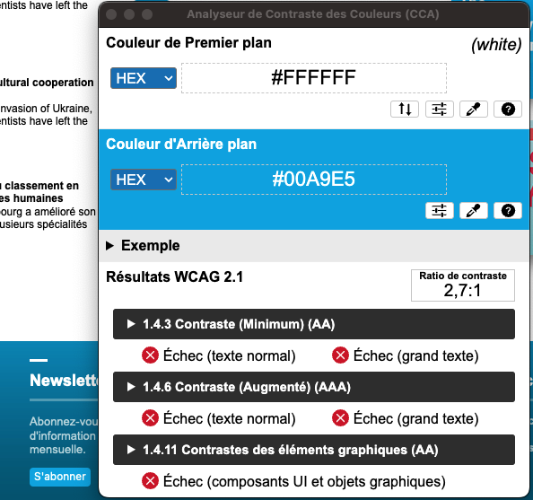
Dans le pied de page du site, le texte du bouton "S'abonner", l'indication de la langue courante n'est donnée que par la couleur. Ce qui constitue une perte d'information pour les personnes aveugles notamment.
Multimédia
Recommandation
Donner si nécessaire à chaque média temporel une transcription textuelle, des sous-titres synchronisés et une audiodescription synchronisée pertinents. Donner à chaque média non temporel une alternative textuelle pertinente. Rendre possible le contrôle de la consultation de chaque média temporel et non temporel au clavier et s'assurer de leur compatibilité avec les technologies d'assistance.
Identifier les vidéos
Il est nécessaire d'identifier la vidéo et permettre ainsi aux utilisateurs de comprendre quelle est l'information présentée dans ce contenu.
Vous disposez de deux méthodes pour le faire :
- soit faire précéder la vidéo par un titre (solution recommandée) ;
- soit faire suivre la vidéo d'une phrase de légende (paragraphe).
Transcription textuelle
Les vidéos présentes sur le site ne disposent pas de transcription textuelle. Il s'agit d'un impact majeur d'accessibilité. En effet, la transcription textuelle est utile pour différents types d'utilisateurs (aveugles, malvoyants, sourds, malentendants, handicapés moteurs, handicapés cognitifs).
Cette transcription doit être un fichier structuré (docx, HTML) qui reprend toutes les informations présentes (visuelles et sonores) dans la vidéo.
Cette transcription peut être située :
- soit sur la même page que la vidéo ;
- soit ailleurs sur le site. Dans ce cas, ajouter alors un lien vers la transcription sous la vidéo par exemple.
Constats sur le site
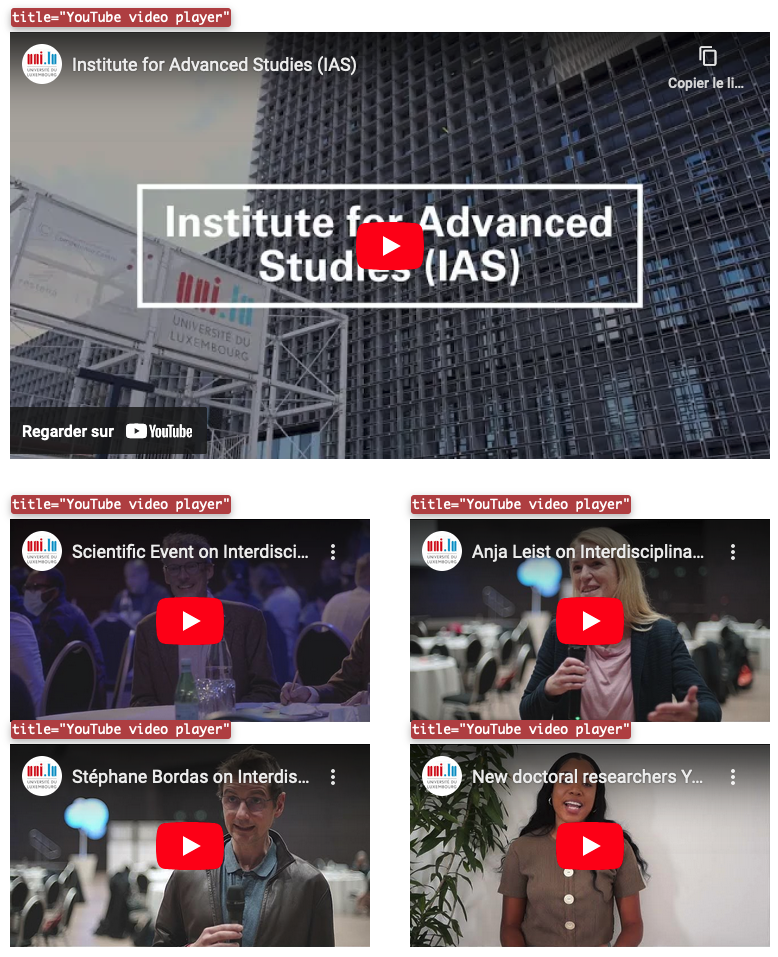Sur la page "Institute for Advanced Studies (IAS)", on trouve cinq vidéos qui n'ont pas de transcription textuelle adjacente à la vidéo.
Tableaux
Recommandation :
Donner un résumé à chaque tableau de données complexe, s'assurer que pour chaque tableau de données ayant un titre, ce titre est pertinent, identifier clairement les cellules d'en-tête, utiliser un mécanisme pertinent pour lier les cellules de données aux cellules d'en-tête. Pour chaque tableau de mise en forme, veiller à sa bonne linéarisation.
Tableaux de mise en forme
La restitution des tableaux peut poser problème pour les personnes aveugles, car les technologies d'assistance tentent d'optimiser la navigation dans les tableaux, en modifiant par exemple le comportement des flèches de direction pour circuler plus facilement entre les cellules.
Dans un tableau de données, cela est utile et correspond au format de données tabulaires, mais dans un tableau de mise en forme, ce comportement est problématique et peut venir perturber le parcours des informations.
L'API ARIA propose une propriété (role="presentation") qui permet d'annuler la sémantique des éléments restitués.
Constats sur le site
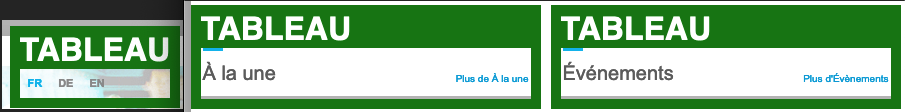Sur l'ensemble des pages du site, comme ici sur la page d'accueil, on trouve des tableaux de présentation qui sont utilisés pour de la mise en forme, mais ne sont pas déclarés comme tels. Ce qui peut poser des soucis de compréhension et de navigation pour les personnes utilisant des lecteurs d'écran.
Tableaux de données
Un tableau de données doit répondre à certains enjeux pour être exploité correctement par les lecteurs d'écran. Les enjeux sont les suivants :
- Le tableau doit posséder un titre permettant de l'identifier (
<caption>) ; - Les en-têtes doivent être identifiés (balises
<th>) et doivent pouvoir être restitués lorsque l'utilisateur parcourt chaque cellule à l'aide de son lecteur d'écran (attributsscopesi nécessaire).
Constats sur le site
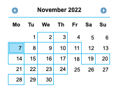Sur la page "Événements", on trouve un sélecteur de date (Datepicker) qui est implémenté dans un tableau de données dont le titre n'est pas correctement relié à celui-ci et dont les en-têtes contenant les jours de la semaine ne sont pas correctement identifiés et associés aux cases correspondantes. Ce qui pose des problèmes aux personnes naviguant avec un lecteur d'écran.
Liens
Recommandation :
Donner des intitulés de lien explicites, grâce à des informations de contexte notamment, utiliser le titre de lien le moins possible. S'assurer que le nom visible est contenu dans le nom accessible.
Pertinence des intitulés
Un lien possède généralement un intitulé et un contexte. L'intitulé est le texte présent dans la balise <a> (ou la valeur de l'attribut alt de l'image dans le cas d'un lien-image) et le contexte du lien est représenté par le titre qui précède, le titre du lien (l'infobulle) ou tout simplement le texte dans lequel il est inséré.
Pour être considéré comme pertinent, l'intitulé d'un lien doit permettre de comprendre sa destination en prenant en compte son contexte.
Constats sur le site
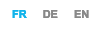Dans l'en-tête du site, l'intitulé des liens vers les différentes langues n'est pas assez explicite.
Liens-images
Un lien-image est un lien dont le contenu n'est composé que d'une ou plusieurs images (balises <img>). Généralement, ces liens ne posent aucun problème aux utilisateurs voyants qui parviennent à comprendre la destination du lien grâce à l'image et son contexte. En revanche, pour une personne aveugle, ces liens doivent obligatoirement posséder un intitulé.
L'intitulé d'un lien-image est généré grâce à l'alternative de l'image contenue dans ce lien.
Constats sur le site
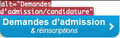Dans l'en-tête du site, le lien image "Demandes d'admission & réinscriptions" a un intitulé constitué de l'alternative de l'image alt="Demandes d’admission/candidature" qui ne reprend pas intégralement le texte présent dans l'image.
Titres de liens (infobulles)
La restitution des titres de liens (attribut title sur une balise) dépend fortement des lecteurs d'écran et des préférences utilisateurs. Ainsi, l'utilisation de ces infobulles doit être limitée aux cas où l'infobulle apporte de l'information supplémentaire par rapport à l'intitulé du lien. De plus, cette infobulle doit reprendre au moins l'intitulé du lien pour être considérée comme conforme.
Constats sur le site
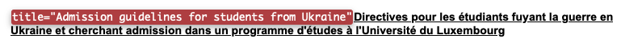Sur la page "Demandes d’admission/candidature", on trouve un lien "Directives pour les étudiants fuyant la guerre en Ukraine et cherchant admission dans un programme d'études à l'Université du Luxembourg" qui a un attribut title="Admission guidelines for students from Ukraine" renseigné. La présence de cet attribut title en anglais et qui ne reprend pas l'intitulé du lien, peut poser des soucis avec les technologies d'assistance si il vient à être restitué à la place du contenu textuel du lien qui est bien en français.
Liens identiques
Si deux liens ont le même intitulé et le même contexte, il s'agit alors de deux liens identiques. Dans ce cas, ces deux liens doivent impérativement renvoyer vers la même page. En effet, pour un utilisateur qui n'a pas une perception globale de la page (utilisateur aveugle par exemple), deux liens avec le même intitulé mènent vers la même page, il peut alors perdre de l'information.
Constats sur le site
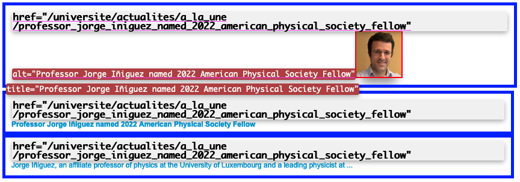Sur la page d'accueil du site, dans la section "À la une", les liens vers les mêmes articles sont répétés plusieurs fois: un lien sur l'image (dont l'attribut alt constitue le nom accessible), un lien sur le titre de l'article et un dernier sur l'extrait de l'article. Or, ces 3 liens avec la même cible n'ont pas le même intitulé, ce qui peut rendre compliquée la compréhension et la navigation dans cette section de la page.
Présence d'intitulés
Un lien doit toujours posséder un intitulé permettant à l'utilisateur de comprendre sa destination. Les liens contenant uniquement des objets graphiques (images, icônes, etc.) posent souvent problème pour les personnes aveugles.
Pour ces liens, la technique pour fournir un intitulé dépend des cas :
- Si ces liens-images sont construits avec des balises images (
<img />), renseignez l'alternative de l'image (par exemple :<a href="https://twitter.com/example"><img src="path/to/img/png" alt="Suivez-nous sur Twitter" /></a>) - Si ces liens-images sont construits avec des balises SVG (
<svg>), alors ajoutez sur cette balise unrole="img"pour indiquer aux lecteurs d'écran qu'il s'agit bien d'une image et un intitulé pararia-label="Suivez-nous sur Twitter".
Constats sur le site
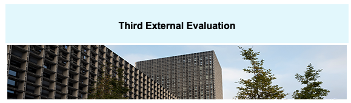Sur la page "Recherche", on trouve des liens images qui n'ont pas d'intitulés, l'attribut alt n'ayant pas été renseigné.
Scripts
Recommandation :
Donner si nécessaire à chaque script une alternative pertinente. Rendre possible le contrôle de chaque code script au moins par le clavier et la souris et s'assurer de leur compatibilité avec les technologies d'assistance. Identifier les messages de statut lorsque c'est nécessaire.
Utilisation des boutons et des liens
Pour les aveugles et les grands malvoyants qui utilisent un lecteur d'écran, ce manque de distinction claire entre les liens et les boutons peut poser de graves problèmes.
Ainsi, un bouton implémenté sous la forme d'un lien qui déclenche une action de la page, risque de perturber l'utilisateur qui s'attendra au chargement d'une nouvelle page.
De manière générale, les liens devraient être réservés à l'affichage d'une nouvelle page ou la création de liens d'accès rapide dans le contenu. Dans tous les autres cas, l'emploi d'un bouton d'action est plus pertinent.
Enfin, chaque bouton doit avoir un nom accessible défini, soit par l'intermédiaire d'un texte (visible ou positionné hors écran) ou d'une propriété title, aria-label ou aria-labelledby.
Constats sur le site
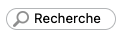Dans l'en-tête du site, l'élément "Loupe" du formulaire de recherche qui déclenche des événements JavaScript n'est pas implémenté dans une balise de type button. Il n'est pas atteignable, ni activable au clavier.
Éléments interactifs inaccessibles au clavier
Si un élément ne peut pas recevoir le focus ou n'est pas totalement utilisable au clavier, les utilisateurs pour lequel le clavier est le seul moyen de naviguer seront bloqués.
Constats sur le site
Sur la page "Événements", le sélecteur de date contient des éléments interactifs, comme les flèches permettant de passer d'un mois à l'autre, qui ne sont pas atteignables ni utilisables au clavier.
Carrousels (ARIA Carousel)
Constats sur le site
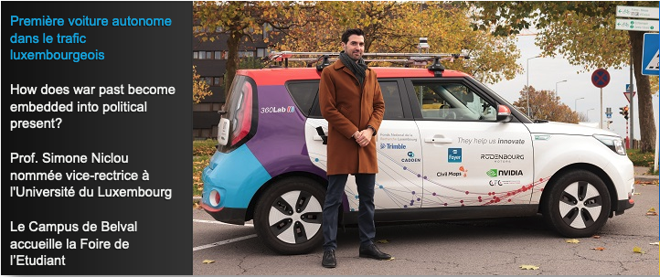Sur la page d'accueil, le carrousel n'implémente pas les principes du motif de conception ARIA Carousel. Il n'est pas accessible au clavier, il n'est pas possible de connaître quel est l'élément actif ainsi que le nombre d'éléments présents dans le composant.
Fenêtres modales (ARIA Dialog)
Constats sur le site
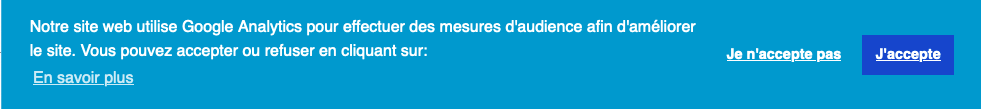La fenêtre modale de gestion des cookies n'implémente pas complètement les principes du motif de conception ARIA Dialog. Celle-ci ne conserve pas le focus utilisateur lors de la tabulation, il n'est pas possible de la masquer à l'aide de la touche ECHAP du clavier. Les boutons d'actions présents ont des noms accessibles donnés par des attributs aria-label qui sont renseignés en anglais.
Gestion de la visibilité de zones (ARIA Disclosure)
Le site possède des fonctionnalités d'affichage ou de masquage des zones de contenus. L'état affiché/masqué du contenu additionnel doit pouvoir être disponible pour les technologies d'assistance afin que les utilisateurs aveugles accèdent à cet état.
Pour ce type d’élément, l’implémentation du motif ARIA Disclosure est recommandée.
Constats sur le site
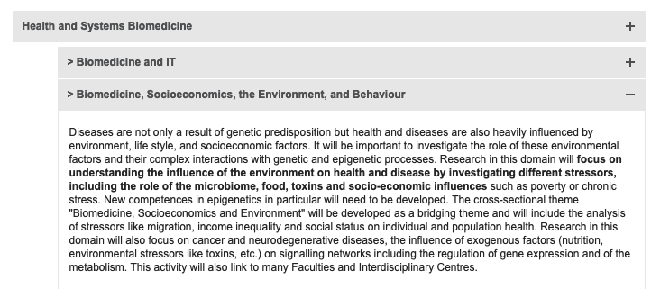Sur la page "Priorités de recherche", on trouve des zones qui s'affichent et se masquent qui n'implémentent pas les principes du motif de conception ARIA Disclosure. Le composant ne retranscrit pas l'état ouvert ou fermé de la zone contrôlée.
Éléments obligatoires
Recommandation
Vérifier que chaque page web a un code valide selon le type de document, un titre pertinent et une indication de langue par défaut. Vérifier que les balises ne sont pas utilisées uniquement à des fins de présentation, que les changements de langues et de direction de sens de lecture sont indiqués.
Titre de la page
Le titre de la page (visible dans l'onglet du navigateur) est un élément de repère dans le site web. Pour les utilisateurs de lecteurs d'écran (utilisateurs aveugles ou grands malvoyants), c'est le premier élément restitué par le lecteur d'écran au chargement de la page. Cela permet de donner du contexte aux utilisateurs qui n'ont pas une vision globale de la page. C'est l'information à laquelle les utilisateurs avec des troubles de la mémoire accèdent lorsqu'ils naviguent avec l'historique de navigation du navigateur. Il est donc essentiel d'avoir des titres de pages pertinents, concis et très souvent uniques dans le site, et qui reflètent de la position de l'utilisateur dans le site web.
Il est des cas particuliers, comme les pages dont le contenu est une liste de résultats paginés (ex. : les résultats de recherche), pour lesquels le titre doit refléter la nature de la recherche ainsi que le numéro de page en cours de consultation.
Constats sur le site
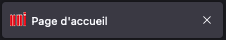Sur la page d'accueil, ainsi que sur l'ensemble des pages du site, seul le nom de la page est présent dans le titre et pas le nom du site. Ce qui pourrait poser des soucis d'identification de la page pour les personnes utilisant des lecteurs d'écran.
Indication de langue
Les lecteurs d'écran utilisent les indications de langue pour vocaliser le contenu dans la langue définie. La page doit contenir une définition de langue principale (généralement sur l'élément html).
Ensuite, les éléments de langue étrangère présents dans le contenu doivent être signalés. Si on trouve dans la page des termes absents du dictionnaire de la langue principale de la page, il faut les identifier afin que le lecteur d'écran les restitue dans la langue appropriée. En effet, une mauvaise prononciation pourrait mener à des incompréhensions pour les utilisateurs qui reposent uniquement sur des restitutions orales. Les noms propres sont exclus de cette obligation.
Constats sur le site
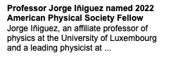Sur l'ensemble du site, dans sa version française, on trouve de nombreux contenus en anglais et en allemand qui ne sont pas indiqués comme tels. Par exemple, sur la page d'accueil, dans la section "à la une" on trouve le texte suivant: "Professor Jorge Iñiguez named 2022 American Physical Society Fellow. Jorge Iñiguez, an affiliate professor of physics at the University of Luxembourg and a leading physicist at ...". Ce texte ne sera pas bien prononcé par les technologies d'assistance, car l'indication de langue n'est pas bonne.
Validité du code
Les technologies d'assistance, comme les lecteurs d'écran ou les systèmes de contrôle à la voix, s'appuient sur le code des pages pour générer les restitutions et les interactions avec l'utilisateur. Un lecteur d'écran va exploiter le code HTML fourni par le navigateur et les informations accessibles au moyen des API d'accessibilité du système.
Si le code comporte des erreurs (balises mal fermées par exemple), il y a un risque que les fonctionnalités du lecteur d'écran soient impactées, comme la navigation de lien en lien par exemple.
Pour vérifier la conformité d'une page, vous pouvez utiliser le validateur mis à disposition par le W3C.
Constats sur le site
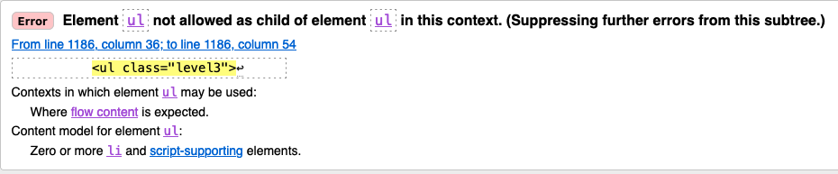Sur la page "Demandes d'admission et candidatures", on trouve des erreurs de balisage qui peuvent poser des soucis aux technologies d'assistance.
Balises utilisées à des fins de présentation
Les éléments de structure HTML ont chacun une sémantique particulière (paragraphe, titre, image, lien, etc.). Si les éléments sont mal employés (détournés de leur utilité première), cela peut poser des problèmes aux utilisateurs qui naviguent à l'aide d'une technologie d'assistance (lecteur d'écran, plug-in…). En effet, les technologies d'assistance disposent de raccourcis permettant de naviguer rapidement entre certains types d'éléments (paragraphes, titres, listes, etc.). Si ces éléments sont mal employés, les utilisateurs ne peuvent pas utiliser ces fonctionnalités de repère et de navigation dans le contenu.
Constats sur le site
-
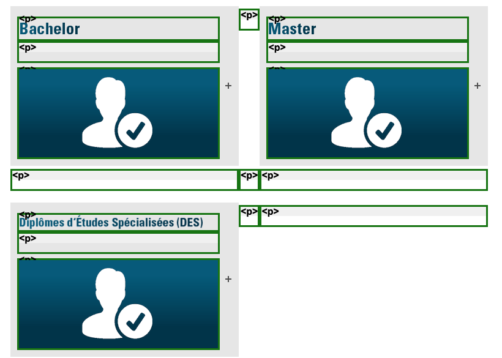
Sur la page "Demandes d'admission et candidatures", comme sur toutes les pages du site, on trouve des balises
<p>vides dans les tableaux de mise en forme. -
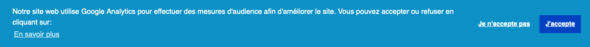
Dans le bandeau de gestion des cookies, le texte "Notre site web utilise Google Analytics pour effectuer des mesures d'audience afin d'améliorer le site. Vous pouvez accepter ou refuser en cliquant sur: " est structuré uniquement avec des balises
<div>.
Structuration de l'information
Recommandation
Utiliser des titres, des listes, des abréviations et des citations pour structurer l'information. S'assurer que la structure du document est cohérente.
Titres
Le titrage des contenus est une étape importante dans la structuration des contenus. Cela répond à deux besoins :
- identifier rapidement un contenu recherché ;
- naviguer rapidement dans le contenu en se déplaçant de titre en titre.
Un titrage correct fournit à l'utilisateur d'un lecteur d'écran un plan du document et lui permet de naviguer de titre en titre pour se déplacer plus rapidement dans le contenu de la page.
Pour valider la structure de votre page, vous pouvez utiliser l'extension Firefox HeadingsMap. Lorsque l'extension est active, sélectionnez l'onglet « Headings » et vérifiez la cohérence et l'imbrication des titres.
.Constats sur le site
-
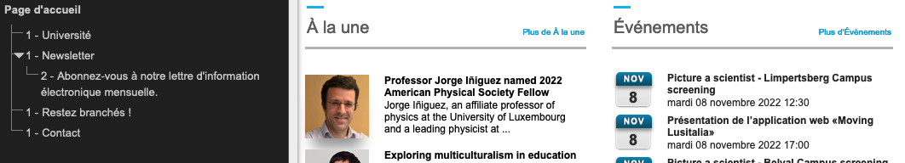
Sur la page d'accueil, il y a des titres de section manquants: Les textes "À la une" et "Événements" qui structurent les zones du même nom ne sont pas définis en tant que titre.
-
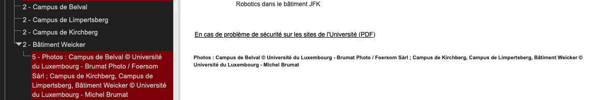
Sur la page de contact, on trouve le texte "Photos : Campus de Belval © Université du Luxembourg - Brumat Photo / Foersom Sàrl ; Campus de Kirchberg, Campus de Limpertsberg, Bâtiment Weicker © Université du Luxembourg - Michel Brumat" structuré en tant que titre de niveau 5 alors que ce n'est pas un titre de section.
-
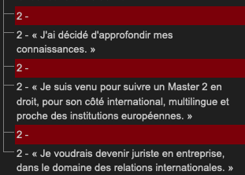
Sur la page "témoignages", on trouve des balises
<h2>vides avant certains titres. Ce qui peut provoquer des soucis de compréhension de la structure de la page.
Listes
La structuration en listes permet aux utilisateurs de lecteurs d'écran de consulter plus rapidement le contenu, grâce à des raccourcis spécifiques, et d'accéder directement à une liste ou de la passer sans avoir à en parcourir tous les items.
Constats sur le site
Dans le pied de page, la suite de liens de la section "Restez branchés" n'est pas structurée en liste.
Citations
L'absence de signalement des citations peut rendre le contenu plus complexe à comprendre pour les personnes aveugles et les grands malvoyants, et générer des ambiguïtés et des incompréhensions.
Constats sur le site
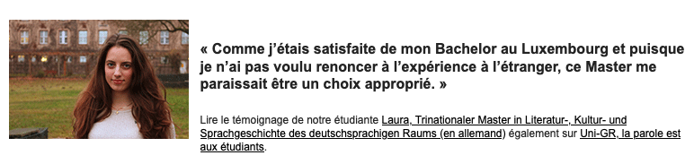Sur la page "témoignages", les citations ne sont pas structurées avec les balises adéquates.
Présentation de l'information
Recommandation
Utiliser des feuilles de styles pour contrôler la présentation de l'information. Vérifier l'effet de l'agrandissement des tailles des caractères sur la lisibilité. S'assurer que les liens sont correctement identifiables, que la prise de focus est signalée, que l'interlignage est suffisant et donner la possibilité à l'utilisateur de contrôler la justification des textes. S'assurer que les textes cachés sont correctement restitués et que l'information n'est pas donnée uniquement par la forme ou la position d'un élément. S'assurer que les contenus sont lisibles et utilisables dans une fenêtre de largeur réduite. Veiller à ce que l'application de paramètres typographiques n'entraîne pas la perte de contenu ou de fonctionnalité. S'assurer que les contenus qui apparaissent au survol et à la prise de focus puissent être contrôlés par l'utilisateur.
Utilisation de CSS exclusivement
Certains utilisateurs qui présentent des troubles de la lecture (personnes dyslexiques par exemple), vont avoir besoin d'adapter la présentation des pages avec leurs propres mises en forme. Cela est possible sans difficulté si le site web utilise exclusivement les feuilles de styles CSS pour réaliser les mises en forme. Cependant, l'utilisation d'attributs et balises HTML de mise en forme rend ces adaptations plus compliquées, sinon impossibles.
.Le RGAA donne la liste des attributs et balises qu'il est interdit d'utiliser.
Constats sur le site
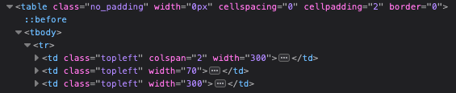Sur l'ensemble du site, sur les tableaux de mise en forme, on trouve des attributs de mise en page: "cellpadding", "cellspacing", "border", "width" qui sont interdits.
Couleur de police et couleur de fond des textes
De nombreux navigateurs permettent aux utilisateurs de choisir une couleur par défaut pour le texte et le fond, à utiliser sans avoir à modifier tous les styles spécifiés par l'auteur. Cela permet aux utilisateurs de visualiser des pages dont les couleurs n'ont pas été spécifiées par l'auteur dans leur combinaison de couleurs préférée.
Pour cette raison, si l'auteur du site a défini une couleur de police sans spécifier de couleur de fond associée, il est possible que le contraste résultant ne soit plus suffisant pour l'utilisateur.
.Constats sur le site
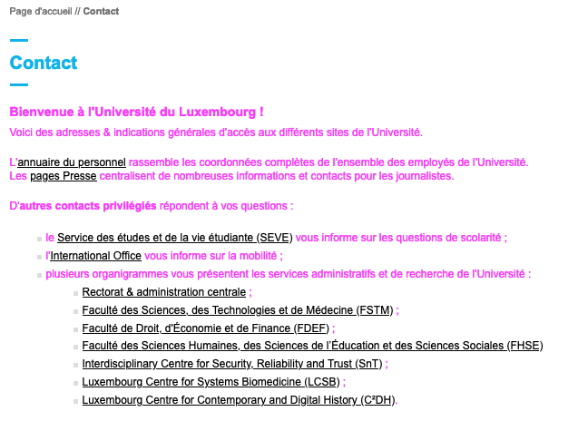Sur l'ensemble du site, le texte de la zone de contenu principal n'a pas de couleur de police définie. Ce qui peut poser des soucis de personnalisation pour les utilisateurs.
Contenu compréhensible sans les styles : ordre visible vs ordre réel
Un utilisateur aveugle n'a pas accès à la mise en forme qui parfois est porteuse d'informations importantes, notamment des relations entre les éléments.
Il est important de ne pas implémenter les textes dans l'ordre visuel, mais bien dans l'ordre logique de dépendance et hiérarchie des éléments.
Le contenu doit rester compréhensible sans les feuilles de styles (vous pouvez tester vos contenus en désactivant les feuilles de styles).
Constats sur le site

Sur la page d'accueil, dans la section "À la une", les images précèdent les titres auxquels elles se réfèrent.
Visibilité de la prise de focus
Les personnes avec un handicap moteur qui naviguent au clavier peuvent rencontrer des difficultés considérables à utiliser du contenu si elles ne sont pas en mesure de repérer l'indication visuelle du focus et ses déplacements.
Constats sur le site
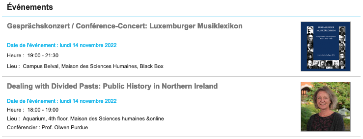Sur la page "Événements", dans la section du même nom, les composants cliquables qui renvoient vers les articles correspondants n'ont pas d'indication de focus.
Information donnée par la forme, la taille ou la position
Les utilisateurs qui ne perçoivent pas la mise en forme (utilisateurs aveugles par exemple) n'auront pas accès aux informations véhiculées par la mise en forme la taille (taille du texte pour signifier un degré d'importance par exemple), ou la position (une consigne indiquant de cliquer en haut à droite par exemple). Il est nécessaire de fournir un équivalent textuel qui permette d'offrir la même information aux utilisateurs aveugles.
Constats sur le site
-

Sur la page "Événements", dans le menu secondaire latéral, l'indication de la page active n'est donnée que par la forme.
-

Sur la même page, dans le composant de sélection de date, l'indication de la présence d'événements et de la date du jour n'est donnée que par la forme.
Largeur réduite
Il s'agit ici de tester la capacité des contenus à se réorganiser lorsqu'un utilisateur malvoyant doit réaliser un zoom graphique de 400%. À ce titre, on teste la lisibilité des contenus dans une fenêtre de largeur réduite à 320px.
On s'assure que l'utilisateur a accès à tous les contenus et que tous les contenus sont lisibles sans avoir recours à la barre de défilement horizontale.
Constats sur le site
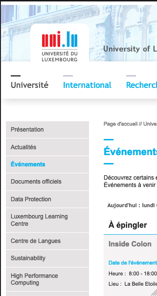Le site n'est pas codé de manière à avoir un contenu qui s'adapte à l'écran. En dessous de 980px de large, il y a l'apparition d'une barre de défilement horizontale.
Paramètres typographiques
Les utilisateurs malvoyants et/ou dyslexiques ont souvent recours à des adaptations de la présentation des textes. Pour cela, on doit s'assurer que de tels paramètres ne viennent pas perturber leur lecture sur le site.
Les présentations doivent supporter l'application de paramètres typographiques visant à augmenter les interlignages, interlettrages, les espaces entre les mots et entre les paragraphes. L'application de ces paramètres ne doit pas entraîner la perte de contenus ou de fonctionnalités :
- L'interlignage augmenté de 1,5 fois la taille de la police ;
- L'espacement entre les paragraphes augmenté de 2 fois la taille de la police ;
- L'espacement des lettres augmenté de 0,12 fois la taille de la police ;
- L'espacement des mots augmenté jusqu'à 0,16 fois la taille de la police.
Constats sur le site
-
Sur la page d'accueil, lors de l'application de paramètres typographiques visant à augmenter l'espace entre les lettres et les mots, certains contenus sont superposés et tronqués comme le contenu du carrousel.
-
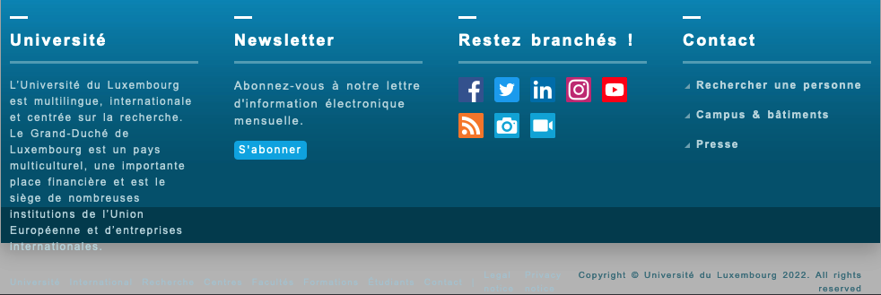
Dans le pied de page du site, la mise en place de paramètres typographiques provoque un déplacement de certains textes qui, même si ils sont toujours présents intégralement, ne sont plus lisibles à cause d'un changement de couleur de fond et un contraste maintenant insuffisant.
Formulaires
Recommandation :
Associer pour chaque formulaire chacun de ses champs à son étiquette, grouper les champs dans des blocs d'informations de même nature, regrouper les items de même nature dans les listes de choix, donner à chaque bouton un intitulé explicite. Vérifier la présence d'aide à la saisie, s'assurer que le contrôle de saisie est accessible et que l'utilisateur peut contrôler les données à caractère financier, juridique ou personnel.
Étiquettes et champs
Les champs de formulaires doivent tous posséder des étiquettes correctement reliées.
Une étiquette de champ est un texte situé à proximité du champ de formulaire qui permet de connaître la nature, le type ou le format des informations attendues.
De cette manière, lorsqu'un utilisateur entre dans le champ de saisie avec un lecteur d'écran, le lecteur d'écran lit le contenu de l'étiquette. L'utilisateur comprend alors ce qu'il doit saisir.
Sans cela, même si une étiquette est présente visuellement, l'utilisateur entendra « champ de saisie vide » en entrant dans le champ et ne saura donc pas quoi saisir.
Constats sur le site
-
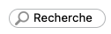
Dans l'en-tête du site, le champ de recherche global n'a pas d'étiquette visible, l'attribut placeholder ne peut être considéré comme une étiquette visible valable.
-

Sur la page de résultats de recherche, le champ de recherche n'a pas d'intitulé visible.
-
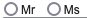
Sur la page "Inscription à la newsletter", les boutons radio "Mr" et "Ms" ne sont pas reliés correctement à leurs étiquettes respectives.
Intitulés de bouton pertinents
Les boutons qui permettent d'interagir avec les formulaires doivent avoir des intitulés pertinents pour que l'utilisateur comprenne l'action du bouton.
Ces intitulés sont essentiels pour les personnes aveugles, afin qu'elles soient sûres de l'action qu'elles s'apprêtent à réaliser.
Constats sur le site
Dans l'en-tête du site, le bouton permettant de soumettre le formulaire de recherche n'a qu'un nom accessible en anglais. Ce qui peut poser des soucis de compréhension.
Contrôle de saisie et aide à la saisie
Tous les champs obligatoires doivent être identifiés préalablement à toute validation de l’utilisateur.
Pour les champs qui attendent un format de saisie particulier pour être validés, ce format doit être spécifié à l’utilisateur par un passage de texte visible à proximité du champ. De plus, si l’utilisateur commet une erreur sur ce champ, alors le message d’erreur doit présenter un exemple réel de saisie.
Enfin, les messages d'erreur de saisie des champs de formulaire doivent être liés correctement aux champs en erreur.
Constats sur le site
-
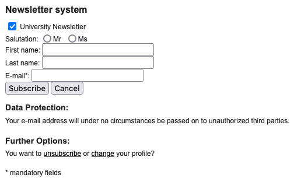
Sur la page "Inscription à la newsletter", l'indication des champs obligatoires ne précède pas le formulaire, mais le suit
-
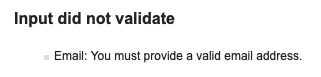
Sur la même page, le champ e-mail attend un format de saisie particulier qui n'est pas précisé et le message d'erreur ne contient pas non plus d'exemple réel de saisie.
Regroupements de champs et légendes
Les regroupements de champs sont utiles pour ne pas induire certains utilisateurs en erreur, notamment les personnes aveugles.
Les cas typiques de regroupements nécessaires sont les groupes de cases à cocher ou de boutons radio.
Il faut implémenter les champs dans un regroupement lorsque c'est nécessaire et il est obligatoire de définir une légende à ce regroupement.
Constats sur le site

Sur la page "Inscription à la newsletter", les boutons radio "Mr" et "Ms" ne sont pas regroupés correctement.
Identification des données attendues
Certains utilisateurs qui ont des troubles d'accès au langage verbal (paralysie cérébrale, aphasie par exemple) auront des difficultés à accéder au sens des termes écrits. Ainsi, pour leur permettre de remplacer les étiquettes présentes dans les formulaires par des étiquettes (verbales ou imagées) qu'ils connaissent, il est nécessaire d'identifier les champs avec un attribut particulier, de sorte qu'une technologie d'assistance pourra réaliser la personnalisation du formulaire nécessaire à l'utilisateur.
L'identification de ces champs permet également aux utilisateurs d'employer des outils pour remplir automatiquement les champs identifiés avec des valeurs de l'utilisateur.
On ne va rechercher que les champs qui attendent une donnée personnelle. Le RGAA demande d'utiliser l'attribut autocomplete et il fournit l'ensemble des valeurs possibles pour l'attribut.
Constats sur le site
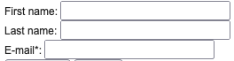Sur la page "Inscription à la newsletter", les champs "First name", "Last name" et "e-mail" ne sont pas identifiés comme étant des données personnelles pouvant être remplies automatiquement.
Navigation
Recommandation :
Faciliter la navigation dans un ensemble de pages par au moins deux systèmes de navigation différents (menu de navigation, plan du site ou moteur de recherche), un fil d'Ariane et l'indication de la page active dans le menu de navigation. Identifier les groupes de liens importants et la zone de contenu et donner la possibilité de les éviter par des liens de navigation interne. S'assurer que l'ordre de tabulation est cohérent et que la page ne comporte pas de piège au clavier. S'assurer que les raccourcis clavier qui utilisent une seule touche sont contrôlables par l'utilisateur.
Systèmes de navigation
Le RGAA demande qu'un site propose au moins deux systèmes de navigations différents. Prévoir deux systèmes de navigation au moins est important, car :
- tous les utilisateurs ne naviguent pas de la même manière ;
- certains systèmes de navigation peuvent s'avérer trop complexes à utiliser, en particulier pour les personnes qui ont recours à des technologies d'assistance. Par exemple, un menu de navigation trop riche, comme un méga-menu, peut nécessiter beaucoup d'actions pour un utilisateur qui navigue exclusivement au clavier, et donc rendre sa recherche d'information très laborieuse.
Par systèmes de navigation, on entend tout procédé permettant une navigation dans le site ou dans une page, parmi :
- un menu de navigation principal ;
- un plan du site ;
- un moteur de recherche.
Note : un moteur de recherche est considéré comme un moyen de navigation s'il indexe toutes les pages du site (y compris les pages de type « Mentions légales » ou « Politique de confidentialité »), et non pas seulement un choix limité (par exemple, seulement les offres tarifaires).
Le plan du site, s’il est présent, doit être représentatif de l’arborescence du site et ne proposer que des liens fonctionnels.
Constats sur le site
Seul le menu de navigation est disponible. Le moteur de recherche ne peut être considéré comme un moyen de navigation, car il n'indexe pas toutes les pages.
.Liens d'accès rapide
On note l'absence d'un lien d'accès rapide au contenu au moins. Les liens d'accès rapides sont utiles aux utilisateurs qui naviguent au clavier, mais aussi aux utilisateurs malvoyants qui utilisent une loupe d'écran afin de sauter rapidement les éléments redondants, comme la navigation.
.Pour cela, il est préférable que ces liens soient toujours visibles à l'écran. Malgré cela, ces liens peuvent être positionnés hors écran, mais doivent au moins être rendus visibles à la prise de focus.
.Il est donc nécessaire d'implémenter au moins un lien d'accès rapide au contenu, qui permet de sauter toute la navigation principale.
Constats sur le site
Il n'y a pas de liens d'accès rapide sur le site.
Landmarks ARIA
Pour fournir des points de repère aux utilisateurs aveugles, il faudra également implémenter les landmarks ARIA sur les balises de la page.
Constats sur le site
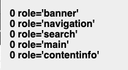Le site étant développé en HTML4, les personnes navigant sur le site n'ont pas de grandes zones de regroupement définies par les balises HTML5. Mais il reste possible de définir ces grandes zones grâce à des attributs role="banner" pour l'en-tête, role="navigation" pour les systèmes de navigation (menu, fil d'ariane, pagination), role="search" pour le moteur de recherche (s’il indexe bien toutes les pages), role="main" pour la zone de contenu principale et role="contentinfo" pour le pied de page.
Consultation
Recommandation
Vérifier que l'utilisateur a le contrôle des procédés de rafraîchissement, des changements brusques de luminosité, des ouvertures de nouvelles fenêtres et des contenus en mouvement ou clignotants. Ne pas faire dépendre l'accomplissement d'une tâche d'une limite de temps sauf si elle est essentielle et s'assurer que les données saisies sont récupérées après une interruption de session authentifiée. Proposer des versions accessibles ou rendre accessibles les documents en téléchargement. S'assurer que la consultation n'est pas dépendante de l'orientation de l'écran. Toujours proposer un geste simple en alternative d'un geste complexe permettant de réaliser une action.
Documents en téléchargement
Assurez-vous que chaque document soit accessible (cf. les Guides de créations de documents bureautiques accessibles), ou qu'il dispose d'une alternative accessible proposant le même contenu (par exemple, une version HTML correctement structurée).
Constats sur le site
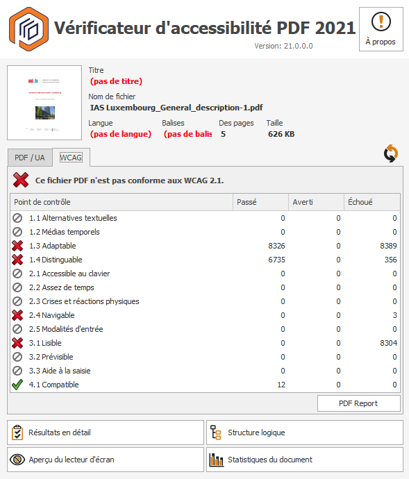Sur la page "Institute for Advanced Studies", on trouve un document bureautique PDF qui n'est pas accessible et n'a pas d'alternative accessible. Il présente des soucis de contraste de texte, ainsi que des problèmes de balisage faisant qu'il n'est pas restitué correctement par les technologies d'assistance.